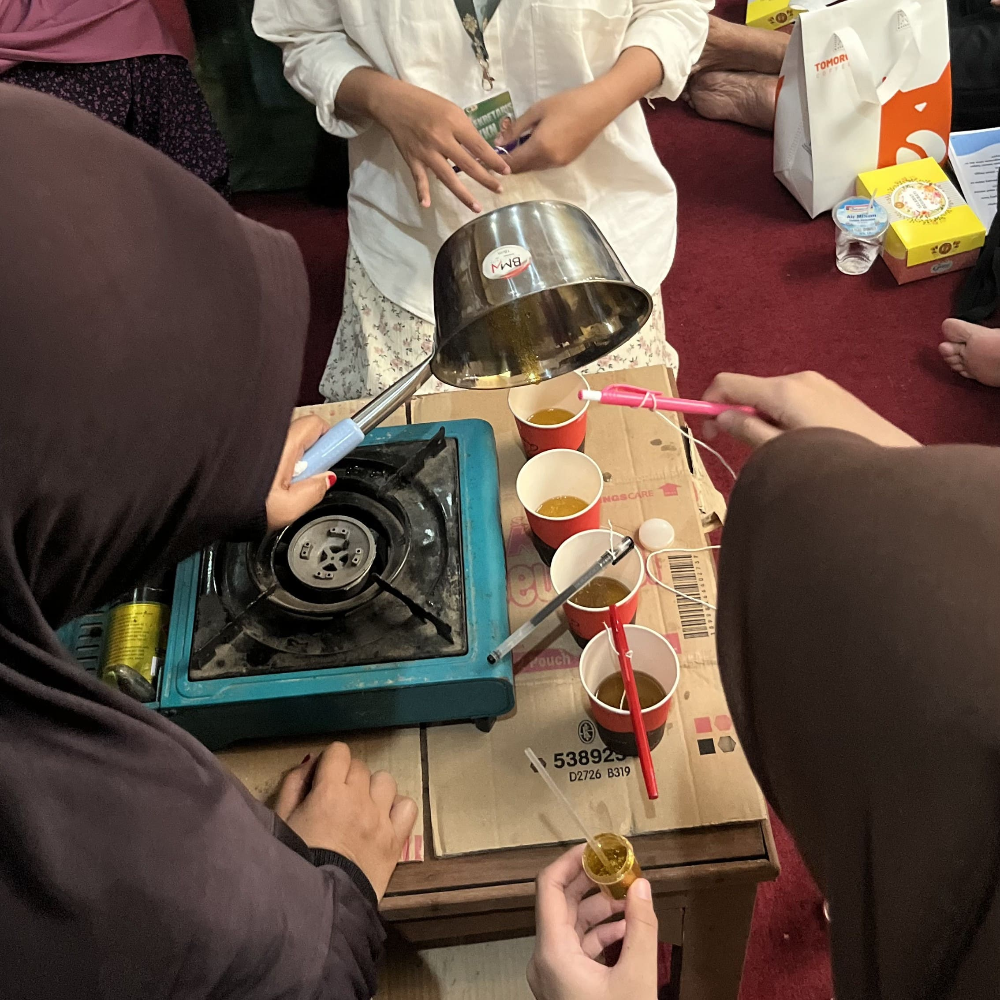

Hari Ketiga belas mahasiswa KKN melaksanakan kegiatan foto studio bersama seluruh anggota kelompok. Kegiatan ini dilakukan sebagai bentuk dokumentasi kelompok sekaligus mengabadikan kebersamaan selama menjalankan program KKN.
Pada malam harinya, mahasiswa melaksanakan makan bersama seluruh anggota kelompok. Kegiatan ini menjadi sarana untuk mempererat hubungan antaranggota, meningkatkan kebersamaan, serta berbagi pengalaman selama pelaksanaan berbagai kegiatan KKN.

Hari Keempat belas mahasiswa KKN melakukan persiapan pelatihan pemanfaatan limbah rumah tangga berupa minyak jelantah menjadi lilin. Persiapan dilakukan dengan menyiapkan bahan, alat, serta materi yang akan digunakan selama kegiatan pelatihan.
Setelah persiapan selesai, dilaksanakan pelatihan pengolahan limbah rumah tangga menjadi lilin dari minyak jelantah kepada ibu-ibu PKK. Kegiatan ini bertujuan untuk memberikan keterampilan kepada masyarakat dalam memanfaatkan limbah rumah tangga menjadi produk yang lebih bermanfaat sekaligus meningkatkan kesadaran terhadap pengelolaan limbah.

Hari Kelima belas melakukan revisi terhadap peta wilayah berdasarkan hasil evaluasi sebelumnya. Revisi dilakukan agar informasi yang disajikan menjadi lebih akurat dan sesuai dengan kebutuhan kelurahan.
Selanjutnya, mahasiswa memasang banner KKN sebagai media informasi mengenai keberadaan dan program kerja mahasiswa selama pelaksanaan KKN. Banner tersebut diharapkan dapat memudahkan masyarakat mengenal kegiatan yang akan dilaksanakan.